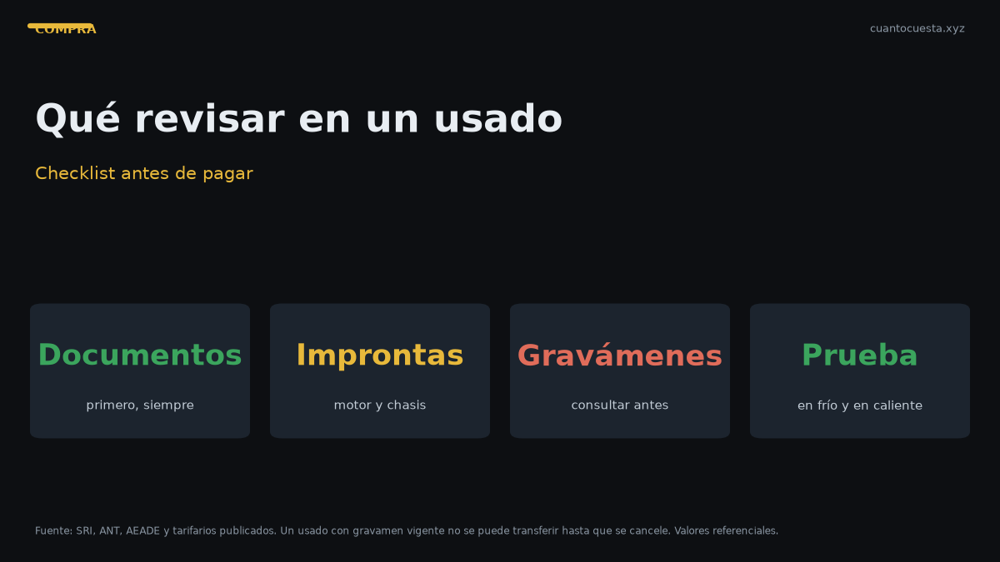

Qué revisar antes de comprar un carro usado en Ecuador (checklist completo)
Checklist mecánico, documentos y pruebas para revisar un carro usado en Ecuador antes de pagar: cómo detectar choque, inundación y motor dañado.

Antes de comprar un carro usado en Ecuador debes revisar tres bloques: el vehículo por dentro y por debajo, los sistemas que no se ven a simple vista (motor, chasis, caja) y los documentos y deudas del vendedor. Si uno de esos tres falla, el precio deja de importar.
Un usado con choque mal reparado o con deudas pendientes puede costarte más que la diferencia entre un buen ejemplar y uno barato. Este checklist está ordenado para hacerlo en una sola visita, de lo más rápido a lo más profundo.
Antes de ir a ver el carro: verificación previa
No gastes tiempo ni gasolina sin hacer esto primero:
- Pide la placa y el número de motor por escrito. Con la placa puedes consultar el avalúo y las deudas antes de moverte.
- Consulta gravámenes, multas e infracciones pendientes. Si el vendedor se niega a dar la placa, la conversación termina ahí.
- Compara el precio contra el avalúo del SRI y contra publicaciones similares. Un precio muy por debajo del mercado no es una oportunidad, es una señal.
- Confirma que el vendedor es el propietario real. Si vende "con poder" de un tercero, revisa el poder y su vigencia.
Un auto con gravamen o con reserva de dominio no se puede transferir hasta que la deuda esté saldada. Verificar esto primero evita que pierdas el tiempo — o el dinero.
Checklist mecánico en la visita
Motor
- Arranque en frío. Llega antes de que el motor esté caliente. Un motor frío que arranca al primer intento y no humea es buena señal.
- Humo del escape. Humo blanco denso y constante puede indicar refrigerante en la combustión. Humo azul, aceite quemado. Humo negro sostenido, mezcla rica o problema de inyección.
- Nivel y color del aceite. Aceite negro espeso con olor a quemado sugiere servicios atrasados. Aceite lechoso indica mezcla con refrigerante.
- Fugas. Revisa el piso bajo el motor y el cárter. Manchas frescas de aceite o refrigerante son una alerta.
- Ruidos. Golpeteo al ralentí o sonido metálico al acelerar no se arreglan con afinamiento.
Transmisión y frenos
- Prueba en D y R parado. La caja no debe golpear ni demorar en enganchar.
- Prueba en subida. Un tramo ascendente revela si el embrague patina (en manual) o si la caja automática se queda en el cambio.
- Pedal de freno. Si se va al fondo o vibra, hay problema en el sistema.
- Freno de mano. Debe sostener el auto en pendiente.
Chasis, carrocería y suspensión
- Pasa por un reductor de velocidad despacio. Golpes o crujidos señalan bujes o amortiguadores vencidos.
- Revisa las hojas de puertas, capó y maletero. Tornillos con marcas de llave o pintura nueva sobre una puerta indican reparación de choque.
- Busca diferencia de tono. Sol a sol, la pintura de un panel reparado rara vez queda idéntica.
- Revisa los marcos internos. Levanta la alfombra y mira los puntos de unión. Arrugas o soldadura irregular en el chasis son señal de accidente estructural.
Cómo detectar un auto chocado
| Qué revisar | Señal de alarma |
|---|---|
| Tornillos de guardafangos y capó | Marcas de llave, pintura sobre rosca |
| Alineación de puertas y capó | Holguras desiguales, cierre forzado |
| Tonos de pintura | Un panel más claro u oscuro que el resto |
| Marco del parabrisas | Sellado nuevo, burbujas o silicona visible |
| Chasis y largueros | Arrugas, golpes, soldadura no original |
| Desgaste de llantas | Desgaste irregular que no se corrige con alineación |
Cómo detectar un auto inundado
El daño por agua es el más difícil de ver y el más caro de reparar, porque aparece meses después en la electrónica.
- Olor a humedad o a encerado dentro de la cabina, sobre todo al encender el aire acondicionado.
- Óxido en los rieles de los asientos y en los tornillos de anclaje.
- Manchas de agua y bordes ondulados en la tapicería, el techo y la alfombra.
- Neblineros y faros empañados de forma permanente.
- Conectores y fusiblera con sulfato o residuo blanquecino.
- Oxido debajo del tablero, en zonas que no deberían mojarse nunca.
Pruebas que debes hacer
- Prueba de ruta de al menos 15 minutos, con tramo urbano y una subida. Diez minutos en planicie no revelan nada.
- Revisión en un taller de tu confianza, no en el taller del vendedor. Pagar $30-50 por un diagnóstico previo es el mejor seguro que puedes comprar.
- Escaneo computarizado de códigos de error en un taller con escáner. Borrar códigos antes de la venta es común.
- Verificación de kilometraje real contra los registros de mantenimiento y el desgaste del pedal y la palanca.
- Prueba a alta velocidad solo si es seguro y legal para detectar vibración de dirección o de carrocería.
Documentos que debes exigir
| Documento | Por qué lo necesitas |
|---|---|
| Cédula del vendedor | Confirma identidad del propietario |
| Certificado de votación | Requisito obligatorio para el traspaso |
| Matrícula o CUV | Respalda datos del vehículo |
| Certificado de improntas | Vincula motor y chasis con el registro |
| Formulario de transferencia | Trámite del traspaso de dominio |
| Contrato de compraventa legalizado | Deja constancia del precio y las condiciones |
| Consulta de infracciones | Sin multas pendientes no hay traspaso |
| Consulta de gravámenes | Confirma que el auto está libre |
| Historial de mantenimiento | Prueba el kilometraje y el cuidado real |
Verifica que el número de motor y el de chasis coincidan con los documentos y con el certificado de improntas. Una diferencia ahí es la señal más grave de todo el checklist.
El traspaso y su costo
El impuesto del traspaso de dominio es del 1% sobre el mayor valor entre el precio del contrato y el avalúo del SRI. Si en el contrato declaras $10.000 y el avalúo del SRI es $12.000, pagas sobre $12.000. No sirve declarar menos: el SRI toma el valor más alto.
El contrato de compraventa debe estar legalizado. Si compras y no haces el traspaso ese mismo día, el auto sigue a nombre del vendedor — y cualquier multa, infracción o responsabilidad posterior queda a su nombre. Haz el trámite juntos.
Resumen práctico
- Verifica gravámenes, multas y avalúo antes de visitar el auto.
- Revisa el motor en frío, la transmisión en subida y fugas debajo del vehículo.
- Los indicios de choque: tornillos marcados, paneles con tono distinto, chasis arrugado.
- Los indicios de inundación: óxido en rieles de asiento, olor a humedad, sulfato en conectores.
- Paga una revisión en taller de tu confianza antes de cerrar el trato.
- Exige todos los documentos y haz el traspaso el mismo día; el impuesto es del 1% sobre el mayor valor entre contrato y avalúo.
- Los requisitos y costos de trámite son referenciales y pueden cambiar. Confirma los valores vigentes en el SRI y la ANT antes de cerrar la compra.
Sigue leyendo
Cómo detectar un carro chocado o inundado en Ecuador
Señales de pintura repintada, óxido en zonas raras, olor a humedad y tornillería marcada: cómo
Cuántos kilómetros dura un motor en Ecuador y cómo alargar su vida útil
Un motor bien mantenido dura 200.000-300.000 km. Cómo afectan la altura de la sierra y el tráfi
Precio justo de un carro usado en Ecuador: cómo calcularlo antes de negociar
Método de depreciación anual, uso del avalúo del SRI y señales de estafa para calcular y negoci
Transferencia de dominio en Ecuador: pasos, tiempos y errores comunes
Transferencia de dominio en Ecuador: tiempos reales, por qué se cae el trámite (multas, gravame
Cómo verificar que un carro usado no tenga gravámenes ni multas en Ecuador
Cómo consultar gravámenes, reserva de dominio y multas de un carro usado en Ecuador antes de co
Cómo usamos estos datos
Las cifras de esta guía provienen de fuentes públicas oficiales y tarifarios de concesionarios publicados. Los valores son referenciales: tasas municipales, promociones y precios de repuestos varían. Verifica siempre en la entidad o concesionario antes de decidir.